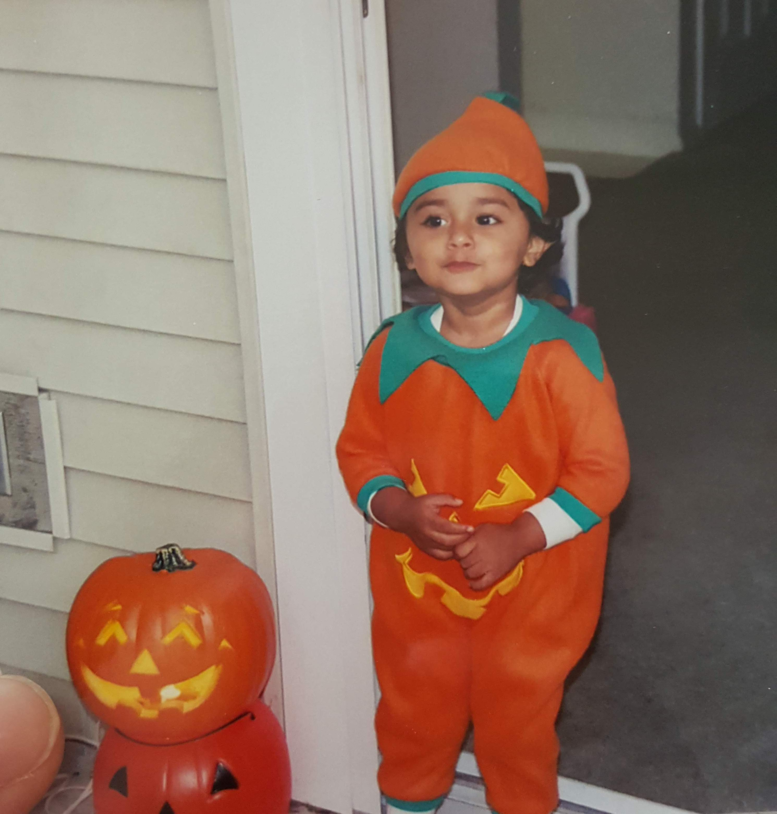
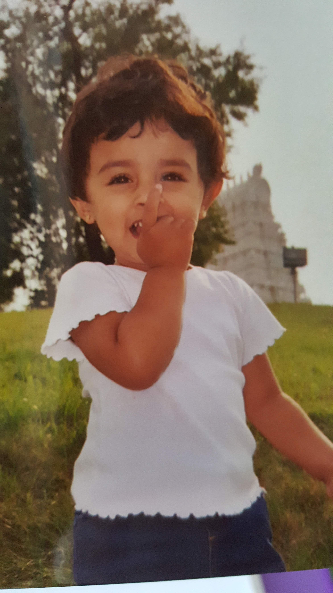

having a passport is a privilege. but for me it's the only way i can see any family except my parents and siblings. 17 hours of travel, for many, is an exotic trip or vacation, but for me it's the minimum to see my grandparents. i live with the knowledge and fear that if anything were to happen to any of my extended family, the soonest i could get there would be in 17 hours. for those that live in less accessible towns, this could go up by 24 hours.
before covid, i took for granted the trips my family had taken to india to see our relatives, when i was younger. i had lived in india for four years during middle school and i got a taste of always living within a 10 hour train ride of my grandparents. i have not seen my grandparents since i was 15 years old, and it takes a toll. during the hardest weeks of college, i would work/study for maybe 15 hours a day. could that be a trip to india?
with every hour of homework and classes that i have taken, i have compared it to the amount of travel needed to see most of my family. i have taken several 17-18 hour semesters - that's just a one-way flight or set of flights to india. weekends spent studying - that's maybe a round trip. but it takes a toll, because i was raised to feel obligated to take care of my family, and feel bad if i didn't. it was only after starting therapy during junior year that i started to heal from the expectations my parents had raised me with. "your parents don't have to say what you want them to," was a hard pill to swallow when all i wanted to hear was a "good job", an "i'm proud of you," not a "why not 105%" on a test that had no extra credit but i scored a 100% on. a lot of people think that my parents jest, but these same thoughts are reflected by my grandparents on our weekly FaceTime calls they don't even know how tall i am compared to them anymore.
the meaning of love truly changes with time - it is no longer butterflies (it really is peace). for me now, it is the excitement of seeing someone at the end of teh day to debrief, and the joy of being able to share mundane tasks with them. it's the trust of permanent reliability and the calmness of their presence even in a different building/room. (romantic love is looking at someone while they excitedly talk and wanting to squeeze them).
every morning i,
without thinking,
steam my milk,
brew my coffee
and combine the two,
with the addition of a third.
sugar.
but who knew?
my adding sugar is so insignificant.
not just to the grand scheme of things,
but to my mug’s liquid chemistry.
when i bake i,
mix a cup of flour,
a cup of milk,
a quarter-cup of sugar.
and then i am stuck:
how many eggs?
in all my time worrying about sugar,
i forgot the origins of life and how even in baking,
we are altering whole outcomes with a crack.
so i am left to wonder,,
why milk and sugar?
what about the eggs?

